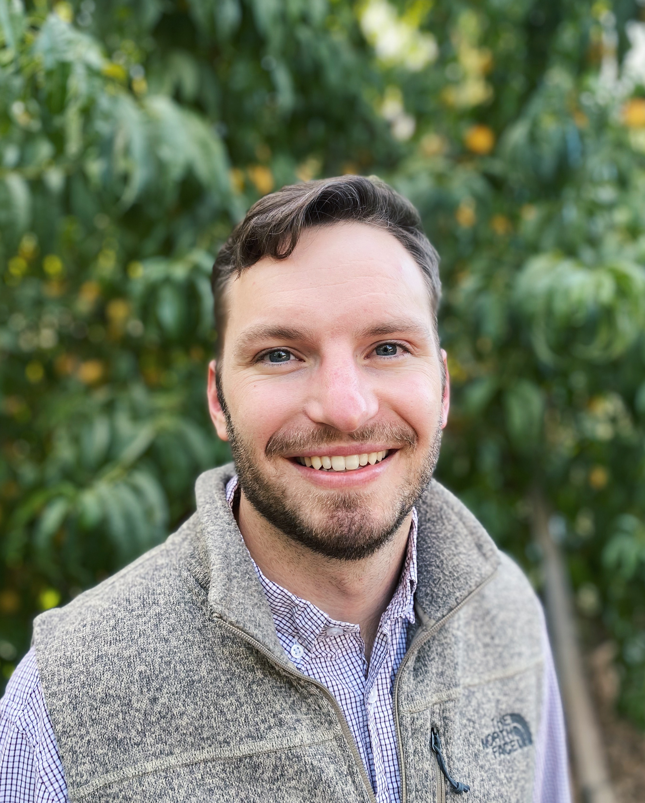

Jeffrey Hadachek

Jeffrey Hadachek Assistant Professor University of Wisconsin-Madison
Biography
I am an Assistant Professor in the Ag and Applied Economics Department at the University of Wisconsin-Madison. I research issues at the intersection of agricultural and environmental economics. To date, my research focuses on water-related externalities from agricultural production and market power in the food supply chain.
Interests
- Agricultural Production
- Water Economics
- Supply Chains / IO
Education
🎓 PhD in Ag and Resource Economics, 2023 — UC Davis 🎓 BS in Agricultural Economics, 2018 — Kansas State University
Publications
Journal of Public Economics, 2026
Journal of Environmental Economics and Management, 2026
American Journal of Agricultural Economics, 2024
USDA Economic Research Service, 2022
Working Papers
July 2025 · R&R at AJAE
Abstract
Nonpoint source pollution from agriculture is the leading cause of nutrient pollution in the US. This paper addresses whether localized, farmer-led programs can cost-effectively reduce nonpoint source pollution by increasing the adoption of agricultural conservation practices. We study this in the context of an innovative program in Wisconsin that incentivizes farmers to take collective leadership of improving water quality in their local watersheds. Using a shift-share instrumental variables design, we find that a 10 percentage point increase in farmer participation in these programs leads to a 0.03 mg/L reduction (14%) in ambient phosphorus concentrations in local streams and rivers. We also show that this change causes an increase in the adoption of cover crops, conservation tillage, and more diverse crop rotations. Importantly, this localized approach achieves water quality and conservation improvements at a substantially lower cost than existing federal subsidy programs, demonstrating the potential for bottom-up approaches to address nonpoint source pollution in other contexts.
July 2025 · R&R at AJAE
Abstract
Firms may under- or over-invest in risk management from the social planner’s perspective, resulting in a negative externality on other economic agents in the supply chain. The externality of risk management provides justification for policy intervention and is particularly relevant for agrifood supply chains that constantly experience shocks and play a primary role in preventing major social losses from food insecurity. We build a theoretical model to characterize such externalities in US food supply chains where intermediary firms choose the quantity of output and the investment in managing risks. The model allows for flexible market structures and interdependence of risk management among firms. Risk interdependence captures the unique feature of biotic hazards (e.g., animal and plant diseases) in agrifood supply chains, where the effectiveness of a firm’s risk management depends on peer firms’ behavior. We offer novel insights on the role of risk interdependence in driving the externality in risk management under different market structures. We show that private firms invest less than the socially optimal level under perfect competition, but risk interdependence and market power introduce complex incentives in risk-reducing investment that shape the externality. The critical implications for the social efficiency of policy interventions are demonstrated via simulations based on the model and empirical literature on biotic hazards in agrifood markets.
May 2025
Abstract
Nitrate contamination of drinking water is a widespread concern and threatens human health. The magnitude of the health consequences depends on individuals’ ability to avoid exposure. This paper uses an event-study framework to uncover avoidance behavior and infant mortality outcomes following public notifications required by the Safe Drinking Water Act. Using store-level scanner data, I estimate that consumers spend $4.5 million annually on bottled water to avoid nitrate-contaminated drinking water. This protective behavior leads to 20 avoided infant deaths per year or $223 million in monetized benefits. These results underscore the benefits and role of environmental information policy in inducing avoidance of environmental hazards.
Teaching
AAE 636: Applied Econometrics I University of Wisconsin-Madison
Contact
- 📧 hadachek@wisc.edu
- 📞 785 527 1107
- 📍 329 Henry Taylor Hall, Madison, WI 53706
- 🐦 @hadachek